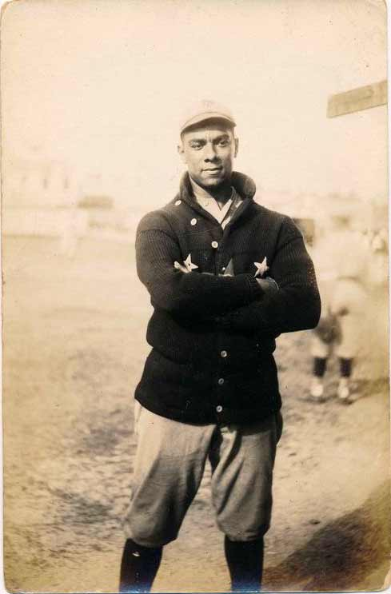

Juan Padron
The left-handed pitcher of Habana

Juan Padron with the New York Cuban Stars, ca. 1920
A time line of Juan Padron's life:
- 1893 - Born in Cuba
- 1909 - Turned pro at 16 playing with a cigar factory team in Tampa, Florida
- 1916 - Strikes out 22 in a 2 to 1 victory over former major leaguer George Mullin in Kokomo, Indiana
- 1918 - Best season with 62 victories against 12 defeats
- 1931 - Defeated both the American and National League Pennant Winners in exhibition games at Ramona Park (Grand Rapids?). Blinding speed and pinpoint control made him one of the all time great baseball pitchers
- 19XX - Played a couple games where he opposed the sensational Satchel Paige in his prime
- 1939 - Still pitching at the age of 47--when he won three games in a single week as the old Chicky Bar Giants swept to the state semi-pro championship in Battle Creek.
"Recognized as one of the finest pitchers in the nation, a left-hander who spread fear whenever he worked" ~